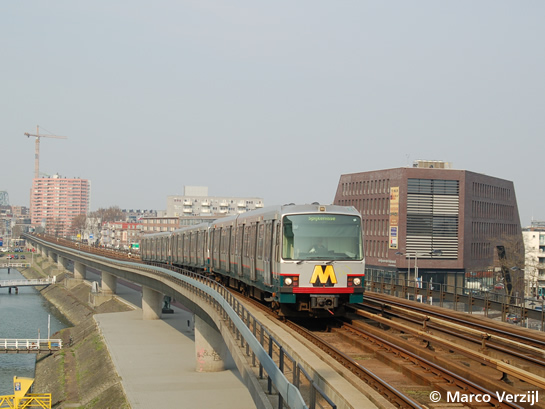
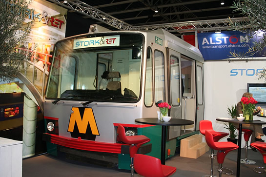

Type T even op terug op Erasmuslijn en overig nieuws....
- maandag 01 december 2008 16:04
- Geschreven door Simon
Door enkele verstoringen in de exploitatie van de Erasmuslijn, werd op deze lijn vanmiddag een combinatie rijtuigen van het Type T ingezet. Wagendienst 902, normaal uitgevoerd met een driewagentrein Bombardier-rijtuigen (serie 5300), werd zaterdagmiddag verzorgd door de rijtuigen 5228-5240-5212. Uiteraard leverde dit een unieke foto op.
Foto met dank aan Marco Verzijl.

Rijtuig 5212 op kop, met daarachter de rijtuigen 5240 en 5228 bij nadering van station Maashaven.
5201
De kop van metrorijtuig 5201 werd van 27 t/m 29 maart gebruikt ter ondersteuning van de stand "Stork & RET" op de Railtech-beurs in Utrecht. De kop is in het passagierscompartiment voorzien van een kleine keuken. Op de achterwand van de kop is een foto geplaatst van het interieur van het Type T. De cabine is voorzien van een andere bestuurdersstoel. Of de stuurtafel nog intact is, is niet bekend. Ook is niet bekend of de metrokop bij andere evenementen ingezet zal worden.
 Lees ook: "Kop 5201 krijgt tweede leven"
Lees ook: "Kop 5201 krijgt tweede leven"
Foto met dank aan Ger Drenth.

De kop van rijtuig 5201 op de Railtech-beurs in Utrecht.
5262
Als alles volgens planning verloopt, zal RandstadRail-rijtuig 5262 dit weekeinde weer terugkeren naar de remise Waalhaven. Het rijtuig heeft een aantal maanden in de Centrale Werkplaats Kleiweg gestaan voor schadeherstel, na de ontsporing op 29 november vorig jaar bij station Forepark. Het transport wordt deze keer niet uitgevoerd door Railion, maar door de RET zelf met locomotief 6101.
Boortunnel RandstadRail
Tunnelboormachine "Pandora" is gistermorgen aangekomen in de Conradstraat, nabij het Centraal Station. Dit betekent dat de eerste tunnelbuis (enkelsporig), met een lengte van 2,4 kilometer, ruwweg gereed is. De tunnelboormachine wordt gedemonteerd en teruggebracht naar de startschacht in de Sint Franciscus Driehoek, alwaar de tunnelboormachine weer opgebouwd wordt. Daarna zal ook de tweede en laatste, parallel lopende tunnelbuis geboord worden.
De tunnelboormachine "Pandora" heeft ongeveer een jaar geboord, op een diepte van gemiddeld 25 meter. Voor Nederland is dit een unicum, want het is de eerste geboorde tunnel in stedelijk gebied. De nieuwe boortunnel is onderdeel van het toekomstige RandstadRail-tracé tussen de stations Rotterdam Slinge en Den Haag Centraal Station. Ter hoogte van station Melanchthonweg wordt de verbinding met de boortunnel en dus het Rotterdams metronet gerealiseerd.